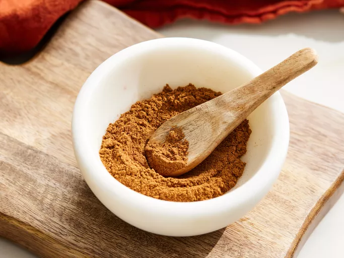

Pumpkin Pie Spice

Now that fall has arrived, it's time to create batches
of one of the most important spice mix of the season! Use these for any pumpkin spice-related recipe!
- 2 tablespoons ground cinnamon
- 1 tablespoon ground ginger
- 1 teaspoon nutmeg
- ½ teaspoon ground cloves
- ½ teaspoon
allspice
Steps
- Grab a small bowl and measuring spoons
- Measure and pour each ingredient into the bowl
- Mix spices together
- Transfer to a small container or cover bowl with cling wrap